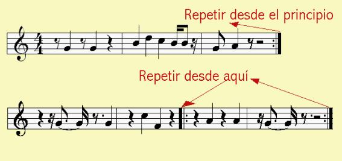
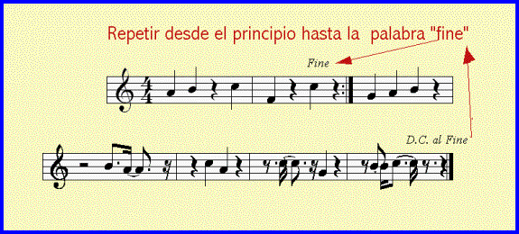
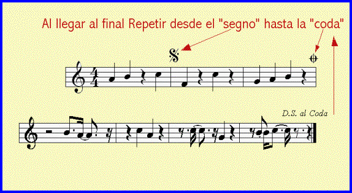

Usamos estos signos para tener que evitar escribir varias veces un mismo fragmento que se repite una o varias veces.
Doble barra con puntos: Cuando nos encontramos dos puntos delante de la doble barra nos indica que debemos volver al principio o desde donde haya otros dos puntos detrás de otra doble barra.

D.C. (Da Capo): Esta expresión italiana o sus siglas nos indicará que debemos repetir desde el principio. Usualmente encontramos la expresión Da Capo a Fine que nos indica que debemos repetir desde el principio hasta donde aparezca la palabra “fine” (fin).

Hay otros
signos que nos indican la repetición de un fragmento.
